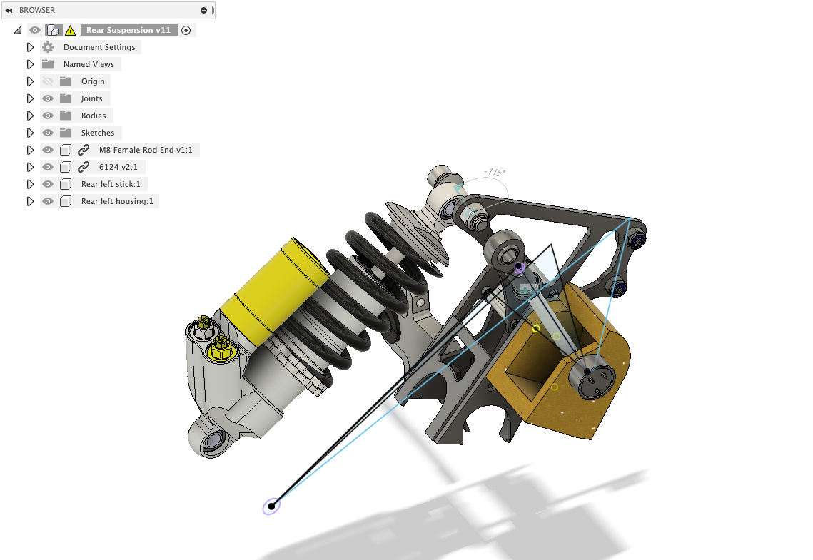
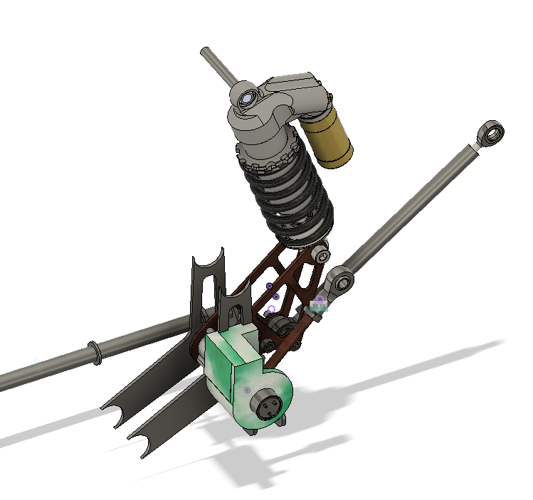

Now there is a lot to consider when you need to attach something
to a racecare that aren't so obvious:
- Vibrations of the vehicle
- How the attachment is installed
- How the attachment is removed
- Will the attachment be able to withstand workshop garage 'oops I dropped my wrench' treatment?
- Will the vibrations of the car affect the quality of the signal in the sensor?
So long story short, I needed a design that will:
- Not be vibrated off the car or undo itself - be as minimal as possible in terms of the amount of parts
- Shelter the sensor such that it will be protected from dropped wrenches, but also have a way
for it to be mounted easily
- Have an accurate enough resolution to give a position based on the very fine angle of rotation
- Have a low hysteresis - the sensor will produce the same results after say one year since it will be mounted
very securely/rather permanently
- Good linearity for consistent results across a range
So after some kerfuffle if you will I present you this!


There are a few things to note about this design
- The mount is designed to slot into the chassis grooves to help create extra stability and prevent any wiggling
- The entire design can be 3D printed with ABS/PLA plastic, these are a lightweight and durable materials
and aren't heavy on manufacturing to ease the iteration phase
- There is a rod attached to the stem of a rotatory potentiometer that will rotate while the sensor
is fixed to the chassis
- It can measure up to 20cm in displacement from the suspension